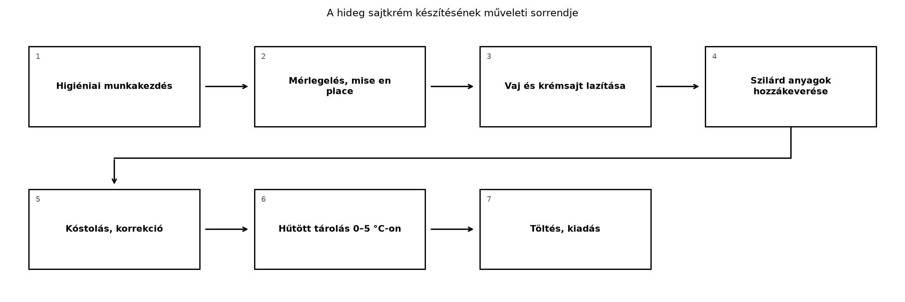

Szombat reggel van a cukrászüzemben. A sós leveles kosárkákhoz hideg sajtkrémet készítenek, ugyanakkor a hűtőből elővették a túrót a leveles batyuk töltéséhez. Az egyik munkatárs a keverőgéppel dolgozik, a másik a húsdarálót készíti elő a sonkás töltelékhez. Mielőtt a termelés elindul, tisztázni kell, melyik töltelék kerül kisült tésztába, melyik nyers tésztába, és milyen biztonsági szabályok vonatkoznak a darálóra, kutterre és keverőre.
A sós töltelékek kétféle utat járnak be. A hideg sós krém közvetlenül fogyasztható, ezért nincs végső hőkezelés. A nyers tésztába tett töltelék ezzel szemben a sütőben hőkezelődik, ezért akár nyers tojást, előfőzött húst vagy nyers gombát is tartalmazhat, ha a késztermék eléri a biztonságos maghőmérsékletet. A fő kérdés tehát nem csak az, hogy mi kerül bele, hanem az is, hogy mi történik vele a tálalás előtt.
Definíció. A sós töltelék olyan cukrászati félkész termék, amelyet sós, fűszeres, sajtos, túrós vagy húsos ízvilágú alapanyagokból keverünk, és kisült tésztába hidegen vagy nyers tésztába töltve, sütéssel hőkezelve használunk fel.
A sós töltelékeket a felhasználás módja szerint két nagy csoportba soroljuk. Ezt mutatja be az alábbi táblázat.
| Jellemző | Hideg sós krém | Sütéssel hőkezelt töltelék |
|---|---|---|
| Felhasználás | leveles kosár, képviselőfánk, szendvics | bukta, batyu, pogácsa, pite |
| Végső hőkezelés | nincs | sütés |
| Tárolás | 0–5 °C, rövid ideig | főtt/előkészített komponensekből, sütés előtti hűtés |
| Legnagyobb kockázat | mikrobaszaporodás, keresztszennyezés | nem kellő maghőmérséklet, túl híg töltelék |
A sós töltelékek sokféle alapanyagból készülhetnek, de a legfontosabbak a tejtermékek, a húskészítmények, a zöldségek és a tojás. A nyersanyagok kiválasztása határozza meg az ízt, az állagot és az élelmiszerbiztonsági kockázatot.
Higiénia. A sós töltelékek gyakran állati eredetű, fehérjében gazdag alapanyagokból készülnek, ezért kiváló táptalajt jelentenek a mikrobáknak. Hideg sós krémet csak tiszta eszközökkel, hűtött alapanyagokból, minél rövidebb szobahőmérsékletű munkaidővel készítsünk. A kész krém hőmérséklete ne emelkedjen 5 °C fölé hosszú időre (ellenőrizendő: üzemi GHP-útmutató). A nyers hús és a kész krém eszközei elkülönítendők.
A hideg sós krémek készítése egyszerű keverésből áll: a zsiradékot fellazítjuk, a szilárd anyagokat hozzákeverjük, majd hűtőben érleljük. A sütéssel hőkezelt töltelékeknél viszont gyakran előfőzés, dinsztelés, lecsepegtetés, majd sűrítés szükséges. A műveleti sorrendet mindig a nedvességviszonyokhoz igazítsuk: a túl híg töltelék eláztatja a tésztát, a túl száraz töltelék szétesik.
Szabály. Ha a nyers tésztába töltött termék a sütőben hőkezelődik, a töltelékben lévő nyers tojást, húst vagy baromfit nem szabad félkész állapotban fogyasztani; a késztermék maghőmérséklete legalább 75 °C legyen (ellenőrizendő: hatályos mikrobiológiai útmutató). Ha a technológia ezt nem tudja biztosítani, az állati eredetű összetevőt elő kell hőkezelni.
Jogszabály. A sós töltelékek előállítására is vonatkozik az élelmiszer-higiéniai rendelet (852/2004/EK), amely előírja a megfelelő hőmérséklet-szabályozást, a keresztszennyeződés megelőzését és a dolgozói higiéniát. A fogyasztók tájékoztatásáról szóló 1169/2011/EU rendelet szerint a késztermék allergénösszetevőit (tej, tojás, glutén, mustár stb.) fel kell tüntetni, vagy a vendég kérésére szóban pontosan meg kell adni. A gépek biztonságára a gépirányelv és a magyar munkavédelmi törvény (1993. évi XCIII. törvény) követelményei vonatkoznak. A konkrét hőfokértékeket és az üzemi előírásokat mindig az üzemi HACCP-terv és a NÉBIH GHP-útmutatója szerint kell pontosítani.
A sós töltelékeknél is gyakran kell a receptúrát nagyítani, kicsinyíteni, vagy a kész tömegből adagot számolni. Az alapeszköz a szorzószám: .
Számítás. A krémsajtos-metélőhagymás hideg krém alapreceptúrája 20 db leveles kosárhoz:
| Nyersanyag | Mennyiség (g) | Megjegyzés |
|---|---|---|
| krémsajt | 500 | zsíros, kenhető |
| vaj | 120 | puha |
| reszelt trappista | 160 | |
| tejföl | 80 | |
| metélőhagyma | 15 | friss, aprított |
| mustár | 10 | allergén: mustár |
| só | 6 | |
| őrölt fehér bors | 1 | |
| Összesen | 892 |
Ha 35 db-hoz kell készíteni, a szorzószám:
A krémsajt új mennyisége:
A többi anyagot ugyanezzel a szorzóval számítva, kerekítéssel: vaj 210 g, reszelt sajt 280 g, tejföl 140 g, metélőhagyma 26 g, mustár 18 g, só 11 g, bors 2 g. Az összes tömeg ellenőrzése: . Ez megközelíti a értéket; az 1 g eltérés a kerekítésekből adódik. ∎
Számítás. Sós túrós tölteléket készítünk nyers leveles batyuba. Egy adag batyuba 45 g tölteléket töltünk. Hány gramm kész tölteléket kell előállítani 18 darabhoz, ha a keverés és adagolás közben 3% konyhai veszteséggel számolunk? A nettó tömeg:
A bruttó (készítendő) tömeg:
Tehát 835 g tölteléket kell bemérni, hogy a veszteség után 810 g adagolható legyen. ∎
A következő gyakorlat a hideg sós krém készítését és gépi keverését tanítja. A kész krémet leveles kosárba vagy képviselőfánkba tölthetjük.
Továbbvitt eredmény. Ezt a krémet és eljárásrendet használjuk a Töltelékek anyaghányad-számítása és élelmiszerbiztonsága alfejezetben, a Vajas, leveles, felvert és hengerelt tésztából készült uzsonnasütemények és a Sós teasütemények alfejezetekben is.
Higiéniai munkakezdés. Munkaruha, hajháló és tiszta kötény felvétele; ékszer levétele; alapos kézmosás; a munkafelület, keverőgép, reszelő és nyomózsák tisztaságának ellenőrzése; az alapanyagok címkéjének, fogyaszthatósági idejének és érzékszervi állapotának ellenőrzése.
Biztonsági korlát. A keverőgép csak oktatás után, felügyelet mellett használható; működés közben kézzel benyúlni tilos. Tisztítás előtt a gépet áramtalanítani kell, és meg kell várni a teljes leállást. Kézi reszelőnél a reszelőt a nyelénél fogjuk, stabil alátéten tartjuk; a sajtdarab végét nem reszeljük le ujjközelig, a maradékot félretesszük vagy késsel aprítjuk. Tisztításkor a reszelőt a nyelénél fogva, kefével, a vágóéllel ellentétes irányban mossuk.
Technológiai lap.

A folyamatábra leírása: a hideg krémnél nincs sütési lépés, ezért a hűtött tárolás a mikrobiológiai kockázatot csökkentő kritikus pont. Ha a krém maghőmérséklete 5 °C fölött volt, és ennek időtartama nem igazolható, vagy meghaladja a HACCP-tervben rögzített időt, a tételt selejtezzük; ha a mért maghőmérséklet 5 °C alatti, vagy az eltérés rövid és igazolt, a krémet azonnal áthelyezzük a hűtőbe, és az eltérést dokumentáljuk (ellenőrizendő: üzemi HACCP-terv).
A sós töltelékek minőségét érzékszervi és tömegellenőrzéssel vizsgáljuk. A hideg krém legyen egynemű, lágyan kenhető, de ne folyós; a fűszerek és a só egyenletesen oszoljon el; a színe feleljen meg a felhasznált alapanyagoknak. A sütéssel hőkezelt töltelék formálható, krémes és a sütés után ne folyjon ki a tésztából. A kész krém tömege a technológiai lapban megadott érték és a bemért anyagok összege közötti eltérés ne haladja meg a konyhai veszteség mértékét.
Hiba. A hideg sajtkrém folyós, nem tartja a formáját a kosárban. Ok: túl sok tejföl, vagy a krémsajt magas víztartalma. Megelőzés: kevesebb tejföl, vagy a krémsajt és vaj arányának növelése. Javítás: ha lehetséges, kevés reszelt sajttal vagy vajjal kötni.
Hiba. A túrós töltelék kifolyik a nyers leveles batyuból. Ok: a túró nem volt lecsepegtetve, vagy a töltelékhez túl sok tejföl került; a sütési hőmérséklet alacsony, a tészta nem záródott. Megelőzés: a túrót áttörjük és csepegtetjük, kevés zsemlemorzsát vagy búzadarát adunk hozzá (a zsemlemorzsa és a búzadara glutént tartalmaz – allergénsor!), a batyut gondosan lezárjuk.
Hiba. A húsos, sonkás töltelék gépi darálása után hasi panaszos vendégpanasz érkezik. Ok: a darálót nem tisztították a nyers hús után, és a kész krémhez használt eszközök keresztszennyeződtek. Megelőzés: nyers húshoz és kész krémhez külön eszköz, a daráló szakszerű tisztítása és fertőtlenítése, kézmosás minden anyagváltás után. Javítás: a termék nem menthető; selejtezni kell, és a dokumentációt a hatósági ellenőrzéshez megőrizni.
Tilos. A lejárt vagy romlott sós tölteléket újra felhasználni, a hűtőláncot megszakítani, vagy a hűtőből kikerült hideg krémet szobahőmérsékleten tárolni.
A sós töltelékeknél gyakran használunk húsdarálót, kuttert és keverőgépet. Minden gépnél a veszélyzóna a mozgó szerszám körül alakul ki.
Biztonsági korlát. A gépi munkát tanműhelyi vagy üzemi környezetben, oktatás után és felügyelet mellett végezzük; otthon háztartási géppel, kis adagban gyakoroljunk. A védőburkolatot, reteszelést, vészleállítót soha ne iktassuk ki.
A húsdaráló veszélyzónáit a metszetrajz mutatja: a tilos zónát sűrű sraffozás és vastag keret jelöli (fekete-fehér nyomtatásban is felismerhető). A képsor a tömőfás töltést, a leállítást és áramtalanítást, a szétszerelést (éles kés és lyuktárcsa), valamint a kutter reteszelt fedelét is bemutatja.
Egy forró nyári napon a cukrászüzem sós leveles kosárkákat készített hideg sajtkrémmel. A munka közben a hűtőajtót többször nyitogatták, és a kész krémmel teli edényt hosszabb időre a konyhapulton felejtették. A dolgozó úgy gondolta, hogy a krém „jól néz ki”, és a kosarakat megtöltötte. Délután az egyik vendég hasi panaszról számolt be. Az üzletvezető a krémet azonnal selejtezte, lezárta a tételt, és a HACCP-dokumentációval együtt visszakereste a hűtési naplót. A hőmérsékletnapló hiányos volt, mert a hűtő hőmérsékletét nem jegyezték fel. A hatósági ellenőrzés hiányosságot állapított meg. A tanulság: a hideg sós krémnél a hűtési lánc és a hőmérséklet-ellenőrzés nem adminisztratív formaság, hanem a fogyasztó egészségét védő kritikus pont. (Az eset általános, tanulási példa; a konkrét hatósági eljárás és bírság összege ellenőrzendő.)
1. feladat (A). Határozd meg a hideg sós krém és a sütéssel hőkezelt sós töltelék közötti legfontosabb élelmiszerbiztonsági különbséget.
2. feladat (A). Sorolj fel legalább négy fontos nyersanyagot a sós töltelékekhez, és egy-egy mondatban mutasd be a szerepüket.
3. feladat (B). A krémsajtos-metélőhagymás hideg krém 20 db helyett 30 db kosárhoz kell. Számítsd ki a krémsajt és a reszelt sajt mennyiségét, ha az alapreceptben 500 g krémsajt és 160 g sajt szerepel.
4. feladat (B). Sós gombás tölteléket készítesz nyers leveles batyuba. Egy batyuba 50 g töltelék kell, és 24 batyut szeretnél készíteni. Mennyi kész tölteléket kell bemérned, ha 4% konyhai veszteséggel számolsz?
5. feladat (C). A hűtő hőmérséklete 8 °C-ot mutat, és a hideg sajtkrémet 3 órája készítettétek el. Mit kell tenni a HACCP szerint? Indokold a döntést, és írd le a helyesbítő tevékenységet.
6. feladat (D). Készítsd el a fenti technológiai lap alapján a krémsajtos-metélőhagymás hideg tölteléket 10 db leveles kosárba (fél adag). Töltsd ki a technológiai lapot, majd értékeld a krémet a megadott minőségi szempontok szerint.
Önellenőrzés – válaszok
1. feladat (A) megoldás. A hideg sós krém közvetlenül fogyasztásra kerül, nincs végső hőkezelés, ezért a mikrobaszaporodás és a keresztszennyeződés a fő kockázat. A sütéssel hőkezelt töltelék a sütőben a nyers tésztával együtt hőt kap, ezért a nyers összetevők addig nyersek maradnak, amíg a maghőmérséklet biztonságos értéket nem ér el. ∎
2. feladat (A) megoldás. Például: túró – fehérjetartalom, krémes állag; sajt – sós íz, zsírtartalom, olvadás; sonka – íz, fehérje; gomba – umami íz, állag, de sok víz; tojás – kötőanyag, emulgeálószer. A lényeg, hogy a tanuló a szerepet és ne csak a nevet adja meg. ∎
3. feladat (B) megoldás. A szorzószám:
Krémsajt:
Reszelt sajt:
Tehát 750 g krémsajt és 240 g reszelt sajt kell. ∎
4. feladat (B) megoldás. Nettó tömeg:
Bruttó tömeg:
Tehát 1250 g kész tölteléket kell bemérni. ∎
5. feladat (C) megoldás. A hűtő hőmérséklete 0–5 °C helyett 8 °C, ez eltérés a kritikus határtól. Első lépés a krém maghőmérsékletének mérése. A krém 3 órája készült: ha a maghőmérséklet 5 °C fölött van, és az 5 °C feletti idő nem igazolható, vagy meghaladja a HACCP-tervben rögzített időt (ellenőrizendő), a tételt selejtezni kell; ha a mért maghőmérséklet 5 °C alatti, vagy az eltérés rövid és igazolt, a krémet azonnal áthelyezzük egy működő hűtőbe, és az eltérést dokumentáljuk. A helyesbítő tevékenység: a hűtő javítása vagy átállítás, a hőmérsékletnaplóba bejegyzés, a selejtezés dokumentálása, a további termelés leállítása, amíg a hűtő nem működik megfelelően. ∎
6. feladat (D) megoldás. A gyakorlati feladat értékelése: a fél adaghoz a krémsajt 250 g, vaj 60 g, sajt 80 g, tejföl 40 g, metélőhagyma 7 g, mustár 5 g, só 3 g, bors 0,5 g. A tanuló tartsa be a higiéniai munkakezdést, a keverőgép biztonsági korlátját, a keverési sorrendet, a hűtést. Értékelni kell a kész krém állagát (lágy, kenhető), a fűszerezést (kiegyensúlyozott), a metélőhagyma egyenletes eloszlását, a tömegpontosságot. A várt eredmény: 446 g kész krém, tiszta, egynemű, nem folyós, hűtőben tárolva. ∎
A sós töltelékeket a felhasználás módja szerint osztjuk hideg sós krémekre és sütéssel hőkezelt töltelékekre. A hideg krémeket kisült tésztába töltjük, nincs végső hőkezelésük, ezért a hűtés (0–5 °C) és a keresztszennyeződés megelőzése kritikus. A sütéssel hőkezelt töltelékek nyers tésztába kerülnek, ezért a bennük lévő nyers tojás, hús vagy baromfi biztonságos maghőmérsékletet igényel; ha ez nem biztosítható, az állati eredetű összetevőt elő kell hőkezelni. A leggyakoribb nyersanyagok: túró, sajt, sonka, gomba, káposzta, spenót és tojás; a vizet visszatartó, kötőanyagok (zsemlemorzsa, búzadara) megakadályozzák a töltelék kifolyását. A gépeknél a daráló, kutter és keverőgép veszélyzónáiba benyúlni tilos; a gépeket csak oktatás után, védőburkolat mellett, tisztítás előtt áramtalanítva szabad használni. Továbbvitt eredmény. A hideg sós krém és a sós túrós/gombás töltelék technológiáját a Töltelékek anyaghányad-számítása és élelmiszerbiztonsága alfejezetben számoljuk tovább, a Vajas, leveles, felvert és hengerelt tésztából készült uzsonnasütemények és a Sós teasütemények alfejezetekben pedig a kész termékekhez használjuk fel.